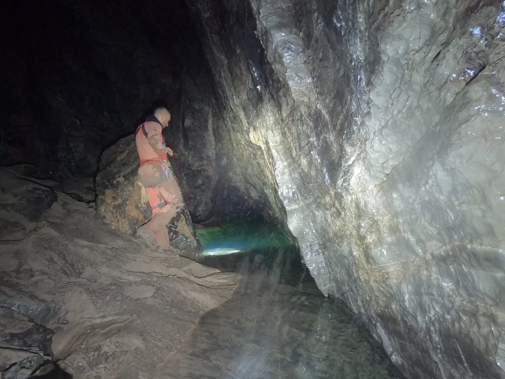

Lipanjska ekspedicija "Nedam 2022" - izvještaj
Ekspedicija u organizaciji SO Velebit i suradnji KS HPS, NP Sjeverni Velebit i potporu HGSS-a završila je uspješno. Zahtjevnim straživanjem iza sifona Nedam je postala druga najdublja jama u Hrvatskoj.

Pripremila: Maja Marinić
Fotografije: Marko Rakovac, Efrosina Hristova
U periodu 15. 06.-22. 06. 2022. godine u organizaciji SO PDS Velebit i Komisije za speleologiju HPS-a, u suradnji s NP Sjeverni Velebit te uz potporu HGSS-a održana je speleološka ekspedicija ˝Nedam 2022˝. Cilj ekspedicije bio je ronjenje kroz sifon u jami Nedam (-1200m), te nastavak istraživanja u suhim dijelovima iza sifona.
U ovogodišnjoj ekspediciji ˝Nedam 2022˝ sudjelovalo je 27 speleologa iz Hrvatske, Mađarske, Bugarske, Austrije i Litve. Svi sudionici ekspedicije sudjelovali su u transportu opreme i istraživanju novih dijelova u jami Nedam. Tijekom ekspedicije bilo je potrebno transportirati dva kompleta ronilčke opreme (6 transportnih vreća) do sifona, kao i transport potrebne opreme za izradu bivka na starom dnu jame (-1220m, 4 transportne vreće), te svu navedenu opremu ponovno transportirati van. Kao što je već poznato, jama Nedam je izuzetno zahtjevna zbog brojnih meandara i suženja, no ni ove godine to nas nije spriječilo u nastavku istraživanja.
Prvi timovi u jamu su ušli u četvrtak (16. 06.), dio u svrhu transporta ronilačke opreme, a dio je opremao dijelove jame koji su prošle godine bili raspremljeni, provjeravao ispravnost telefonske žice i postavljao bivak na starom dnu za ronilačku ekipu. U jami su bila postavljena 4 bivka i to na dubinama: -300 m, -600 m, -950 m i -1220 m. Ronioci su prvi puta zaronili u subotu (17. 6.) i istraživali oko 10 sati u suhim dijelovima jame iza sifona. Taj dan došli su do još jednog sifona na dnu vertikale koji nisu ronili. Putem su ostavili jedan upitnik "za kasnije", gdje se bilo potrebno zavući između kamenih blokova u kanalu. Tu su odlučili zaviriti na putu natrag, što ih je odvelo u novu dvoranu, dimenzijama najveću dvoranu u jami Nedam, koja se nalazi na većoj dubini od površine vode novonađenog sifona. Taj dan istražili su otprilike do dubine -1325 m. Pošto su ostali bez opreme za nastavak istraživanja, i pomalo iscrpljeni, odlučili su se vratiti. U nedjelju (18. 06.) zaronili su drugi puta kako bi nastavili istraživanje u novootkrivenoj dvorani. Na dnu dvorane ponovno se nalazi sifon koji je dosta mutan i nepovoljan za ronjenje. Površina vode tog sifona označava novu dubinu jame Nedam od -1335 m, čime premašuje dubinu Slovačke jame i čini ju drugom najdubljom jamom u Hrvatskoj. Novoistražena duljina iznosi 354 m, odnosno ukupna duljina jame 3399 m.
Početak sifona u velikoj dvorani ujedno je i nova najdublja točka jame Nedam: -1335 metara
U jednom navratu nastavilo se istraživati i u drugom kraku jame Nedam, poznatom "Usisavaču" na -596 m dubine. Tim od troje speleologa prošao je horizontalno oko 3 m duljine, te su se djelomično uspjeli spustiti niz kratku vertikalu (10-ak metara). Spuštanje niz vertikalu zapriječio je veliki kameni blok koji se zaglavio u meandru. Ono što su vidjeli je polica na dnu vertikale gdje se nakuplja voda, te ponovno horizontalni nastavak kanala. Usisavač je izuzetno zahtjevan za istraživanje zbog uskih dijelova kroz koje je teško prolaziti, a i istraživati.
Poligonski vlak jame Nedam u profilu s naznačenim novoistraženim dijelovima (crveno)
Ovaj fantastičan uspjeh ekspedicije ne bi bio moguć bez svih sudionika ekspedicije koji su se pošteno namučili transportiranjem opreme na dno i površinu, preopremanjem jame u nekoliko navrata zbog jake cirkulacije ljudi, a i strpljivim čekanjem na bivcima za preuzimanje i nastavak transporta opreme.
Zahvaljujemo se svim sudionicima ekspedicije, NP Sjeverni Velebit, Komisiji za speleologiju HPS-a te se veselimo idućoj suradnji!